Scatterplots, hexagonal heatmaps, and pairs plots from MCMC draws. See the Plot Descriptions section, below, for details.
Usage
mcmc_scatter(
x,
pars = character(),
regex_pars = character(),
transformations = list(),
...,
shape = 21,
size = 2.5,
alpha = 0.8,
np = NULL,
np_style = scatter_style_np()
)
mcmc_hex(
x,
pars = character(),
regex_pars = character(),
transformations = list(),
...,
bins = 30,
binwidth = NULL
)
mcmc_pairs(
x,
pars = character(),
regex_pars = character(),
transformations = list(),
...,
diag_fun = c("hist", "dens"),
off_diag_fun = c("scatter", "hex"),
diag_args = list(),
off_diag_args = list(),
condition = pairs_condition(),
lp = NULL,
np = NULL,
np_style = pairs_style_np(),
max_treedepth = NULL,
grid_args = list(),
save_gg_objects = TRUE
)
scatter_style_np(
div_color = "red",
div_shape = 16,
div_size = 2.5,
div_alpha = 1
)
pairs_style_np(
div_color = "red",
div_shape = 4,
div_size = 1,
div_alpha = 1,
td_color = "yellow2",
td_shape = 3,
td_size = 1,
td_alpha = 1
)
pairs_condition(chains = NULL, draws = NULL, nuts = NULL)Arguments
- x
An object containing MCMC draws:
A 3-D array, matrix, list of matrices, or data frame. The MCMC-overview page provides details on how to specify each these.
A
drawsobject from the posterior package (e.g.,draws_array,draws_rvars, etc.).An object with an
as.array()method that returns the same kind of 3-D array described on the MCMC-overview page.
- pars
An optional character vector of parameter names. If neither
parsnorregex_parsis specified then the default is to use all parameters. As of version1.7.0, bayesplot also supports 'tidy' parameter selection by specifyingpars = vars(...), where...is specified the same way as in dplyr::select(...) and similar functions. Examples of usingparsin this way can be found on the Tidy parameter selection page.- regex_pars
An optional regular expression to use for parameter selection. Can be specified instead of
parsor in addition topars. When usingparsfor tidy parameter selection, theregex_parsargument is ignored since select helpers perform a similar function.- transformations
Optionally, transformations to apply to parameters before plotting. If
transformationsis a function or a single string naming a function then that function will be used to transform all parameters. To apply transformations to particular parameters, thetransformationsargument can be a named list with length equal to the number of parameters to be transformed. Currently only univariate transformations of scalar parameters can be specified (multivariate transformations will be implemented in a future release). Iftransformationsis a list, the name of each list element should be a parameter name and the content of each list element should be a function (or any item to match as a function viamatch.fun(), e.g. a string naming a function). If a function is specified by its name as a string (e.g."log"), then it can be used to construct a new parameter label for the appropriate parameter (e.g."log(sigma)"). If a function itself is specified (e.g.logorfunction(x) log(x)) then"t"is used in the new parameter label to indicate that the parameter is transformed (e.g."t(sigma)").Note: due to partial argument matching
transformationscan be abbreviated for convenience in interactive use (e.g.,transform).- ...
Currently ignored.
- shape, size, alpha
For
mcmc_scatter(), passed toggplot2::geom_point()to control the appearance of the points.- np
Optionally, a data frame of NUTS sampler parameters, either created by
nuts_params()or in the same form as the object returned bynuts_params(). The colors, shapes, and sizes of the superimposed points can be customized using thenp_styleargument.- np_style
If
npis specified,np_stylecan be a call to thescatter_style_np()helper function (formcmc_scatter()) or thepairs_style_np()helper function (formcmc_pairs()) to specify arguments controlling the appearance of superimposed points representing NUTS diagnostic information. (Note: forpairs_style_np()thesizearguments are interpreted as scaling factors).- bins, binwidth
For
mcmc_hex(), an optional numeric vector of length two passed toggplot2::geom_hex()to override the default binwidth in both the vertical and horizontal directions.- diag_fun, off_diag_fun
For
mcmc_pairs(), the plotting function to use for the plots along the diagonal and for the off-diagonal plots, respectively. Currentlydiag_funcan be"hist"for histogram or"dens"for density, andoff_diag_funcan be"scatter"for scatterplot or"hex"for a hexagonal heatmap.- diag_args, off_diag_args
For
mcmc_pairs(), optional named lists of arguments to pass to the functions implied by thediag_funandoff_diag_funarguments, respectively. For example, ifoff_diag_funis"scatter"thenoff_diag_argscould include optional arguments tomcmc_scatter()likesizeandalpha.- condition
For
mcmc_pairs(), a call to thepairs_condition()helper function, which is used to specify a criterion for determining which chains (or iterations) are shown in the plots above the diagonal and which are shown in the plots below the diagonal. The histograms (or density plots) along the diagonal are always made using all chains and iterations, but the scatterplots (or hex plots) above and below the diagonal show different combinations of chains/iterations depending oncondition. The default is a call topairs_condition()with none of its arguments specified. In this case half of the chains (or roughly half if there are an odd number) will be used in the plots above the diagonal and the rest in the plots below the diagonal. Thechains,draws, andnutsarguments topairs_condition(), which are documented below, can be used to change this default.- lp
For
mcmc_pairs(), a molten data frame of draws of the log-posterior or, more commonly, of a quantity equal to the log-posterior up to a constant.lpshould either be created vialog_posterior()or be an object with the same form as the object returned bylog_posterior().- max_treedepth
For
mcmc_pairs(), an integer representing the maximum treedepth allowed when fitting the model (if fit using NUTS). This is only needed for detecting which transitions (if any) hit the maximum treedepth.- grid_args, save_gg_objects
For
mcmc_pairs(), arguments to pass tobayesplot_grid(). For example, sincemcmc_pairs()returns more than a single ggplot object, usingggtitle()afterwards will not work. But you you can still add a title to the plot usinggrid_args = list(top="My title").- div_color, div_shape, div_size, div_alpha, td_color, td_shape, td_size, td_alpha
Optional arguments to the
scatter_style_np()orpairs_style_np()helper functions that are eventually passed toggplot2::geom_point().The default values are displayed in the Usage section above.- chains, draws, nuts
Optional arguments to the
pairs_condition()helper function, which is used to specify theconditionargument formcmc_pairs().The
chainsargument can be used to select some subset of the chains. Ifchainsis an integer vector then the behavior is the same as the default (half the chains above the diagonal and half below) except using only the specified subset of chains. Alternatively,chainscan be a list of two integer vectors with the first specifying the chains to be shown in the plots above the diagonal and the second for below the diagonal.The
drawsargument topairs_condition()can be used to directly specify which realizations are plotted above and below the diagonal.drawscan be a single proportion, which is interpreted as the proportion of realizations (among all chains) to plot in the lower panel starting with the first realization in each chain, with the complement (from the end of each chain) plotted in the upper panel. Alternativelydrawscan be a logical vector with length equal to the product of the number of iterations and the number of chains, in which case realizations corresponding toFALSEandTRUEwill be plotted in the lower and upper panels, respectively.For models fit using NUTS, the
nutsargument topairs_condition()can be used. It takes a (possibly abbreviated) string to select among"accept_stat__","stepsize__","treedepth__","n_leapfrog__","divergent__","energy__", and"lp__". These are the sampler parameters associated withNUTS()(and"lp__"is the log-posterior up to an additive constant). In this case, plots below the diagonal will contain realizations that are below the median of the indicated variable (or are zero in the case of"divergent__"), and plots above the diagonal will contain realizations that are greater than or equal to the median of the indicated variable (or are one in the case of"divergent__"). If"lp__"is used then thelpargument tomcmc_pairsmust also be specified. For the other NUTS parameters thenpargument tomcmc_pairs()must also be specified.
Value
mcmc_scatter() and mcmc_hex() return a ggplot object that
can be further customized using the ggplot2 package.
mcmc_pairs() returns many ggplot objects organized into a grid via
bayesplot_grid().
Plot Descriptions
mcmc_scatter()Bivariate scatterplot of posterior draws. If using a very large number of posterior draws then
mcmc_hex()may be preferable to avoid overplotting. For models fit using NUTS thenp, andnp_stylearguments can be used to add additional information in the plot (in this case the approximate location of divergences). For more on why the scatter plot with divergences is a useful diagnostic tool see Gabry et al. (2019).mcmc_hex()Hexagonal heatmap of 2-D bin counts. This plot is useful in cases where the posterior sample size is large enough that
mcmc_scatter()suffers from overplotting.mcmc_pairs()A square plot matrix with univariate marginal distributions along the diagonal (as histograms or kernel density plots) and bivariate distributions off the diagonal (as scatterplots or hex heatmaps).
For the off-diagonal plots, the default is to split the chains so that (roughly) half are displayed above the diagonal and half are below (all chains are always merged together for the plots along the diagonal). Other possibilities are available by setting the
conditionargument.Additionally, extra diagnostic information for models fit using NUTS can be added to the pairs plot using the
lp,np, andnp_stylearguments. Ifnpis specified (andconditionis not"divergent__"), then points (red, by default) will be superimposed onto the off-diagonal plots indicating which (if any) iterations encountered a divergent transition. Also, if bothnpandmax_treedepthare specified then points (yellow, by default) will be superimposed to indicate a transition that hit the maximum treedepth rather than terminated its evolution normally. Thenp_styleargument can be used with thepairs_style_np()convenience function to change the appearance of these overlaid points. See the Examples section.
References
Gabry, J. , Simpson, D. , Vehtari, A. , Betancourt, M. and Gelman, A. (2019), Visualization in Bayesian workflow. J. R. Stat. Soc. A, 182: 389-402. doi:10.1111/rssa.12378. (journal version, arXiv preprint, code on GitHub)
Examples
library("ggplot2")
# some parameter draws to use for demonstration
x <- example_mcmc_draws(params = 6)
dimnames(x)
#> $Iteration
#> NULL
#>
#> $Chain
#> [1] "chain:1" "chain:2" "chain:3" "chain:4"
#>
#> $Parameter
#> [1] "alpha" "sigma" "beta[1]" "beta[2]" "beta[3]" "beta[4]"
#>
# scatterplot of alpha vs log(sigma)
color_scheme_set("teal")
(p <- mcmc_scatter(x, pars = c("alpha", "sigma"),
transform = list(sigma = "log")))
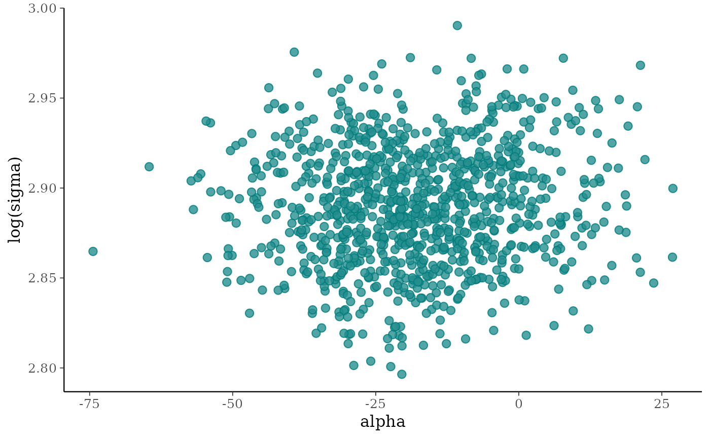
p +
labs(
title = "Insert your own headline-grabbing title",
subtitle = "with a provocative subtitle",
caption = "and a controversial caption",
x = expression(alpha),
y = expression(log(sigma))
)
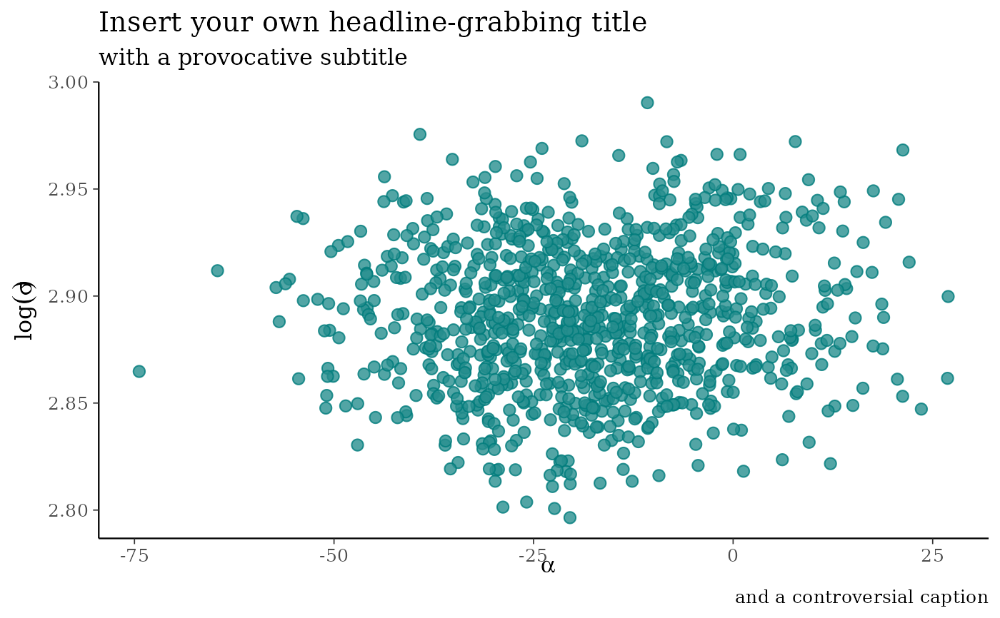
# add ellipse
p + stat_ellipse(level = 0.9, color = "gray20", size = 1)
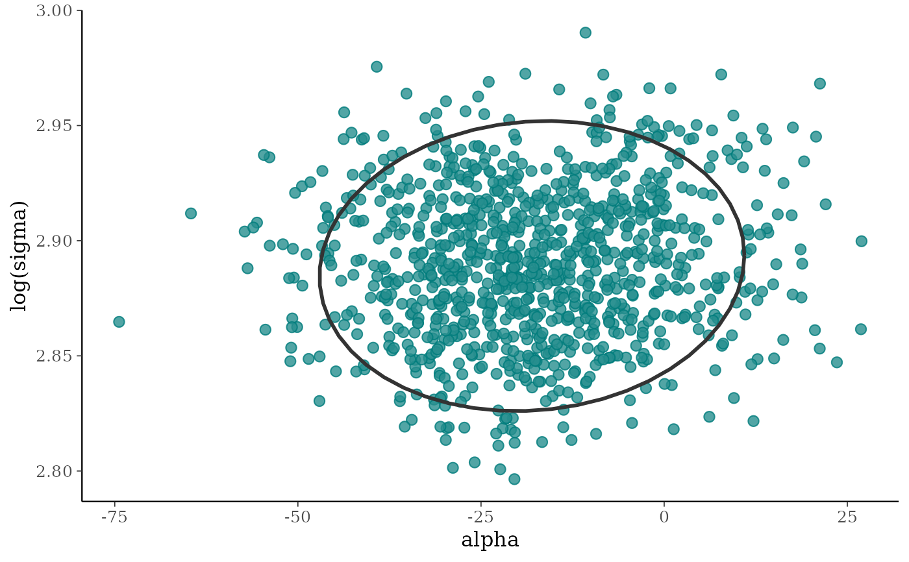
# add contour
color_scheme_set("red")
p2 <- mcmc_scatter(x, pars = c("alpha", "sigma"), size = 3.5, alpha = 0.25)
p2 + stat_density_2d(color = "black", size = .5)
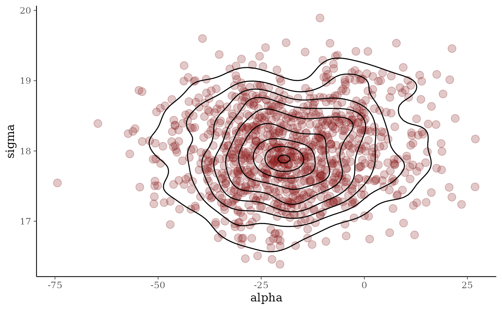
# can also add lines/smooths
color_scheme_set("pink")
(p3 <- mcmc_scatter(x, pars = c("alpha", "beta[3]"), alpha = 0.25, size = 3))
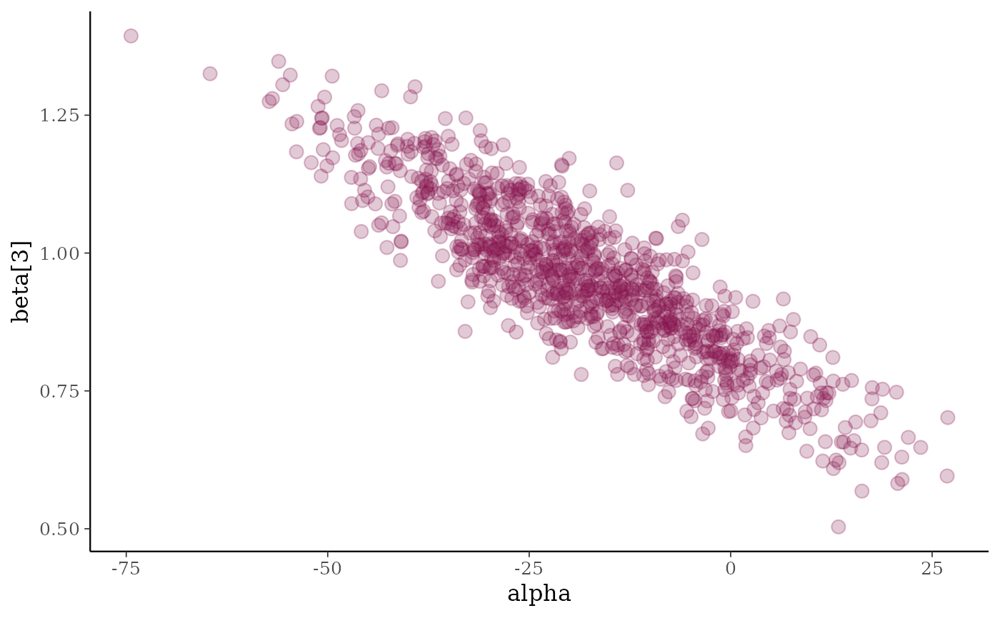
p3 + geom_smooth(method = "lm", se = FALSE, color = "gray20",
size = .75, linetype = 2)
#> `geom_smooth()` using formula = 'y ~ x'
# \donttest{
if (requireNamespace("hexbin", quietly = TRUE)) {
# hexagonal heatmap
color_scheme_set("brightblue")
(p <- mcmc_hex(x, pars = c("sigma", "alpha"), transform = list(sigma = "log")))
p + plot_bg(fill = "gray95")
p + plot_bg(fill = "gray95") + panel_bg(fill = "gray70")
}
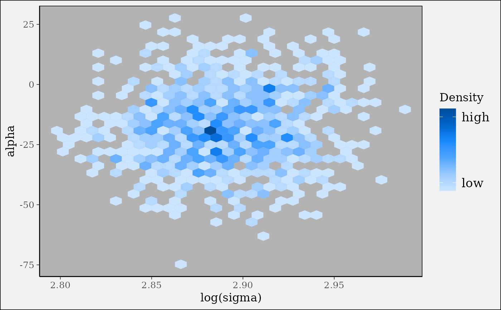
# }
# \donttest{
color_scheme_set("purple")
# pairs plots
# default of condition=NULL implies splitting chains between upper and lower panels
mcmc_pairs(x, pars = "alpha", regex_pars = "beta\\[[1,4]\\]",
off_diag_args = list(size = 1, alpha = 0.5))
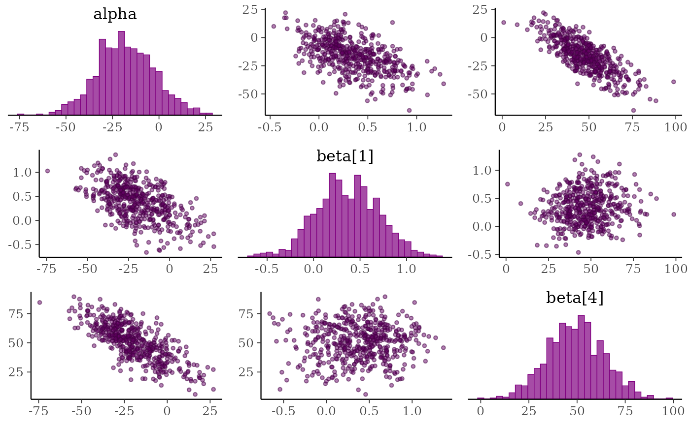
# change to density plots instead of histograms and hex plots instead of
# scatterplots
mcmc_pairs(x, pars = "alpha", regex_pars = "beta\\[[1,4]\\]",
diag_fun = "dens", off_diag_fun = "hex")
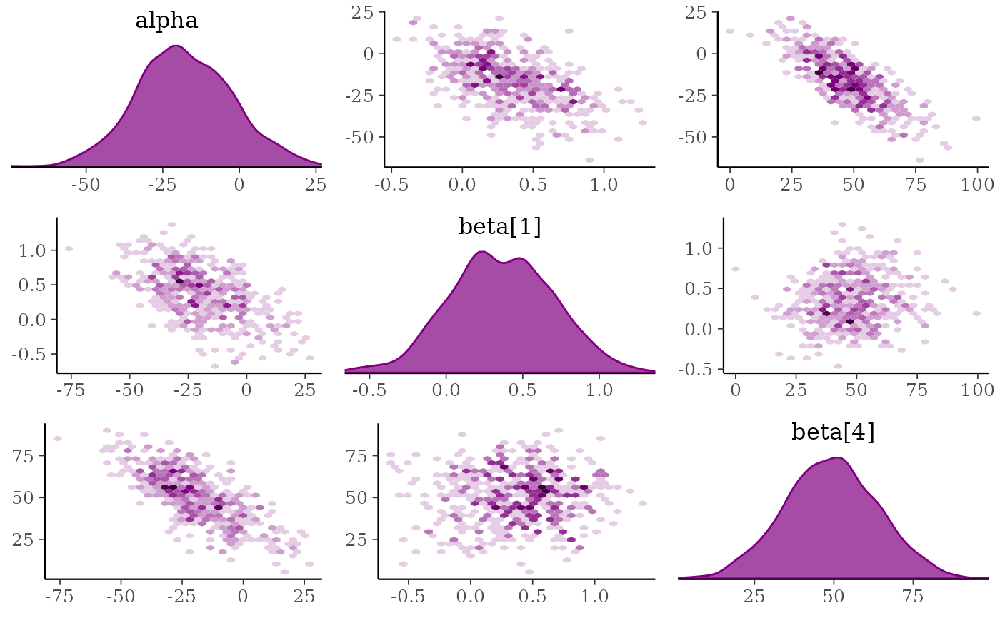
# plot chain 1 above diagonal and chains 2, 3, and 4 below
color_scheme_set("brightblue")
mcmc_pairs(x, pars = "alpha", regex_pars = "beta\\[[1,4]\\]",
diag_fun = "dens", off_diag_fun = "hex",
condition = pairs_condition(chains = list(1, 2:4)))
# }
# \dontrun{
### Adding NUTS diagnostics to scatterplots and pairs plots
# examples using rstanarm package
library(rstanarm)
# for demonstration purposes, intentionally fit a model that
# will (almost certainly) have some divergences
fit <- stan_glm(
mpg ~ ., data = mtcars,
iter = 1000, refresh = 0,
# this combo of prior and adapt_delta should lead to some divergences
prior = hs(),
adapt_delta = 0.9
)
#> Warning: There were 35 divergent transitions after warmup. See
#> https://mc-stan.org/misc/warnings.html#divergent-transitions-after-warmup
#> to find out why this is a problem and how to eliminate them.
#> Warning: Examine the pairs() plot to diagnose sampling problems
#> Warning: Bulk Effective Samples Size (ESS) is too low, indicating posterior means and medians may be unreliable.
#> Running the chains for more iterations may help. See
#> https://mc-stan.org/misc/warnings.html#bulk-ess
posterior <- as.array(fit)
np <- nuts_params(fit)
# mcmc_scatter with divergences highlighted
color_scheme_set("brightblue")
mcmc_scatter(posterior, pars = c("wt", "sigma"), np = np)
 color_scheme_set("darkgray")
div_style <- scatter_style_np(div_color = "green", div_shape = 4, div_size = 4)
mcmc_scatter(posterior, pars = c("sigma", "(Intercept)"),
np = np, np_style = div_style)
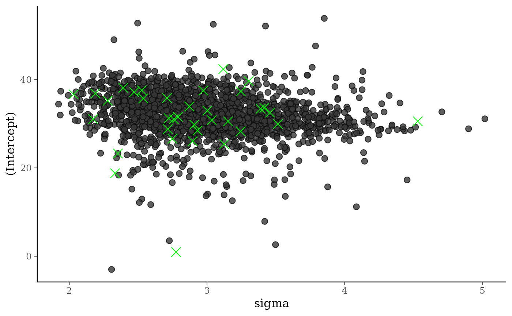
# split the draws according to above/below median accept_stat__
# and show approximate location of divergences (red points)
color_scheme_set("brightblue")
mcmc_pairs(
posterior,
pars = c("wt", "cyl", "sigma"),
off_diag_args = list(size = 1, alpha = 1/3),
condition = pairs_condition(nuts = "accept_stat__"),
np = np
)
color_scheme_set("darkgray")
div_style <- scatter_style_np(div_color = "green", div_shape = 4, div_size = 4)
mcmc_scatter(posterior, pars = c("sigma", "(Intercept)"),
np = np, np_style = div_style)
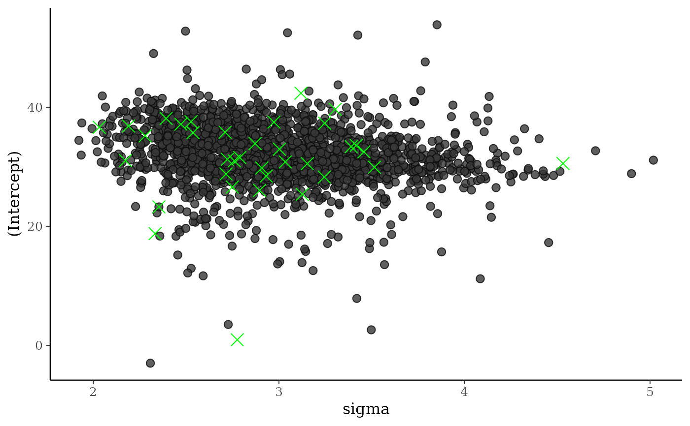
# split the draws according to above/below median accept_stat__
# and show approximate location of divergences (red points)
color_scheme_set("brightblue")
mcmc_pairs(
posterior,
pars = c("wt", "cyl", "sigma"),
off_diag_args = list(size = 1, alpha = 1/3),
condition = pairs_condition(nuts = "accept_stat__"),
np = np
)
 # more customizations:
# - transform sigma to log(sigma)
# - median log-posterior as 'condition'
# - hex instead of scatter for off-diagonal plots
# - show points where max treedepth hit in blue
color_scheme_set("darkgray")
mcmc_pairs(
posterior,
pars = c("wt", "cyl", "sigma"),
transform = list(sigma = "log"),
off_diag_fun = "hex",
condition = pairs_condition(nuts = "lp__"),
lp = log_posterior(fit),
np = np,
np_style = pairs_style_np(div_color = "firebrick",
td_color = "blue",
td_size = 2),
# for demonstration purposes, set max_treedepth to a value that will
# result in at least a few max treedepth warnings
max_treedepth = with(np, -1 + max(Value[Parameter == "treedepth__"]))
)
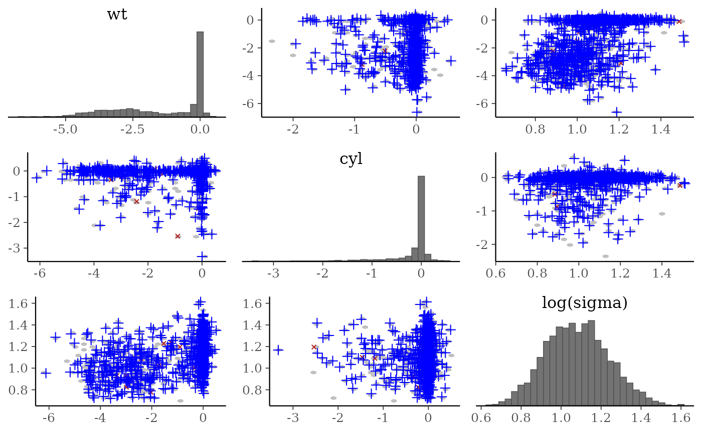
# }
# more customizations:
# - transform sigma to log(sigma)
# - median log-posterior as 'condition'
# - hex instead of scatter for off-diagonal plots
# - show points where max treedepth hit in blue
color_scheme_set("darkgray")
mcmc_pairs(
posterior,
pars = c("wt", "cyl", "sigma"),
transform = list(sigma = "log"),
off_diag_fun = "hex",
condition = pairs_condition(nuts = "lp__"),
lp = log_posterior(fit),
np = np,
np_style = pairs_style_np(div_color = "firebrick",
td_color = "blue",
td_size = 2),
# for demonstration purposes, set max_treedepth to a value that will
# result in at least a few max treedepth warnings
max_treedepth = with(np, -1 + max(Value[Parameter == "treedepth__"]))
)
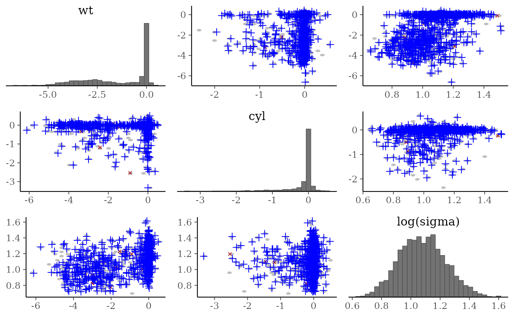
# }